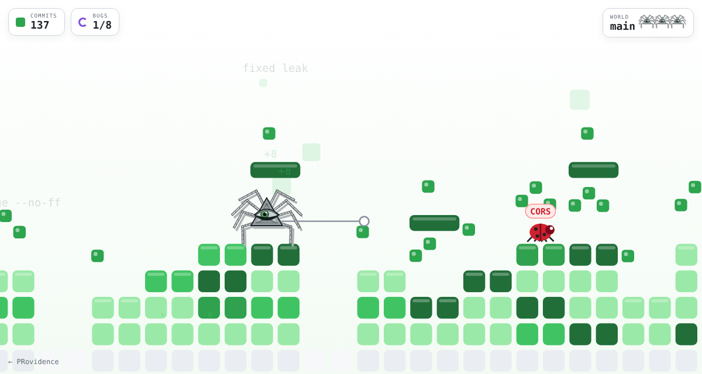

Meet the night shift.
One eye in a triangle, eight riveted legs, and a shadow that only shows up after midnight.

Commits before you roll over.
It starts at 01:07. By the time you wake up there's a pull request and a report, and it's waiting for you.
One night, six moves.
The same order every night. Nothing gets touched until it has been seen twice.
- I
Map before touching
Walks every repo, every file, every language. Writes nothing. The first night is always read-only.
- II
Reproduce first
A fix is only applied if the check fails right now. Then it runs the check again. Still failing? It puts the file back.
- III
Every bug is a typed record
{ "kind": "leaked-secret", "severity": "critical", "confidence": 0.9, "blast_radius": ["src/env.ts"], "status": "reproduced" } - IV
Four legs code, four farm
Every finding becomes a note linked to its file and module. Open the folder in Obsidian and you see your repo as a web.
- V
Stay inside the web
No pushes to main. No secrets. No deletes. No rewritten history. These aren't instructions in a prompt; they throw errors in code.
- VI
Write the morning report
What got fixed, what's left with evidence, and the last line, every time: what did I not see?
Six limits it can't cross.
Every write goes through one function. That function says no.

PRovidence Quest
I opened my laptop and found a game. I'm the side character in my own repo now.
- The level is your contribution graph. Empty weeks are pits.
- The enemies are bugs: off-by-1, null, CORS, flaky, race…
- The final boss is a merge conflict.

What did I not see?
The last line of every morning report.